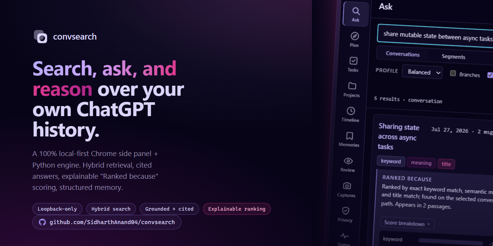
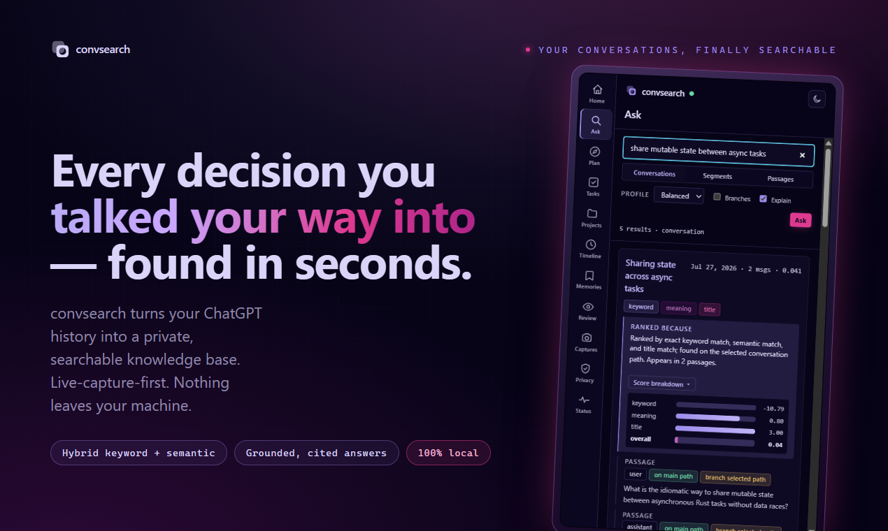
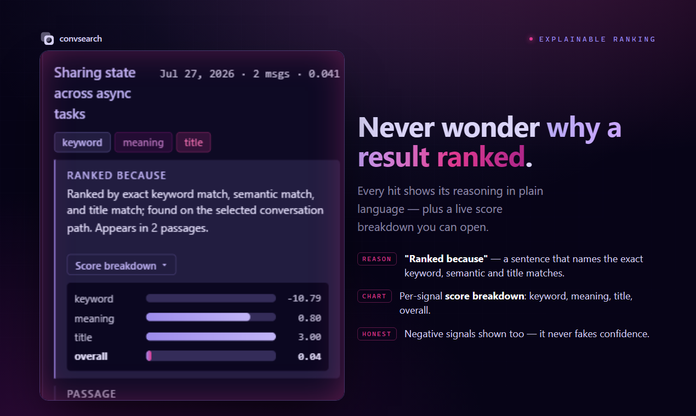
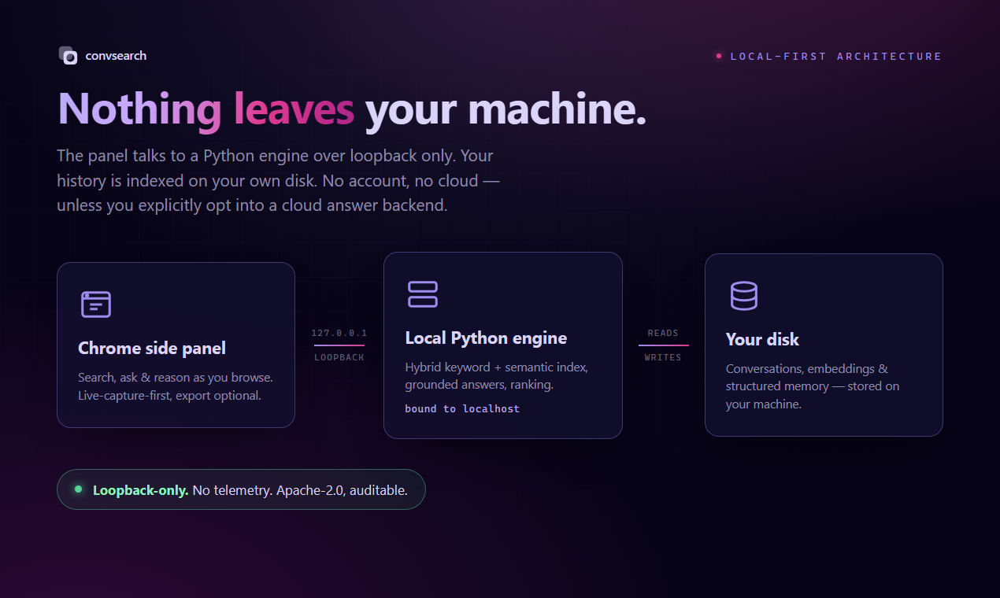
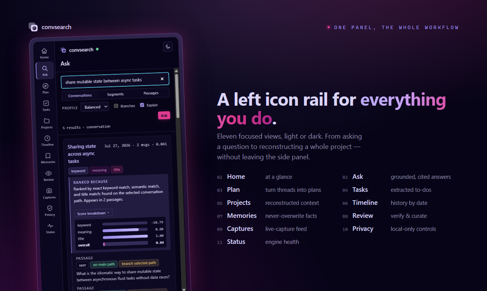
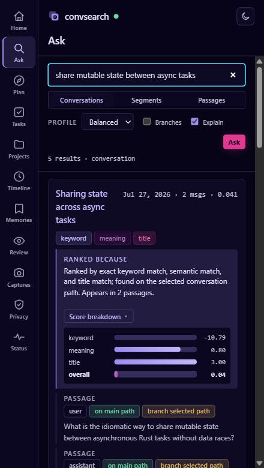
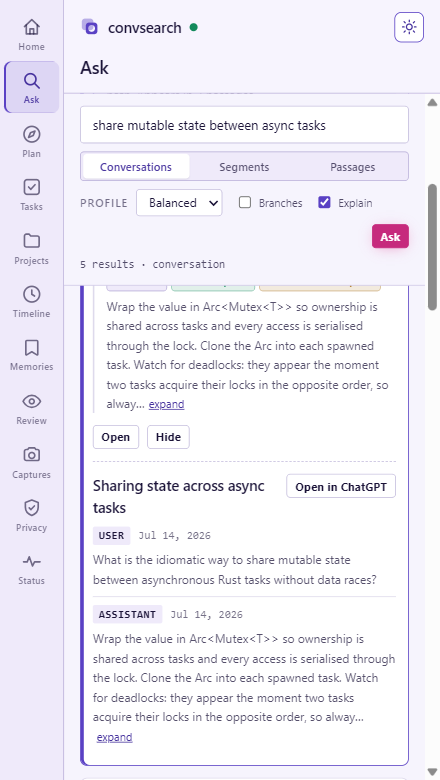
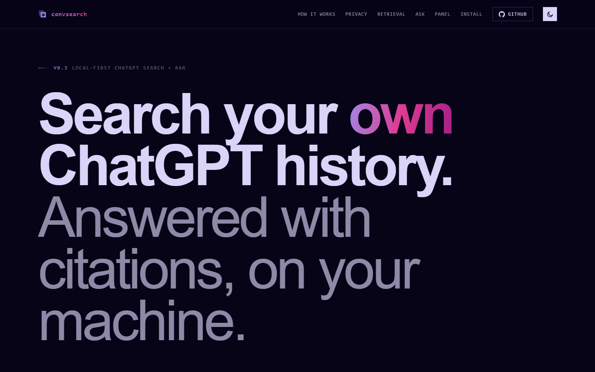

extension v0.3 Local-first ChatGPT search + RAG
Your ChatGPT history, finally searchable. Search, ask, and reason over it on your machine.
convsearch is a Chrome extension and a local Python server. The extension quietly captures conversations as you read them on chatgpt.com; the server indexes them for hybrid keyword + semantic search, explainable ranking, cited question-answering, and structured memory — entirely on your own disk. No account, no required API key, nothing leaves your machine.

01 What it does
Six capabilities, one local process.
Hybrid retrieval
SQLite FTS5 lexical search fused with local FAISS embeddings via reciprocal rank fusion, then aggregated to conversations.
Explainable ranking
Every result can show a "ranked because…" reason and the full score breakdown — lexical, semantic, title, reranker, fused, final.
Structured memory & projects
Durable facts, decisions, constraints, and project dashboards extracted from your conversations and queryable over HTTP.
Local Ask via Ollama
Cited answers synthesized from your own history — a local Ollama model first, with an opt-in cloud fallback.
Private self-improvement
Your clicks and asks are logged locally and nudge future ranking. On-device heuristics plus local-LLM summaries — no shared model.
Side-panel extension
A Chrome side panel beside chatgpt.com — an icon-rail nav across eleven views, a light/dark theme toggle, a universal command bar, and a right-click search.
◱ See it
What it actually looks like.
Real captures from convsearch running locally — the animated Ask & Search flow,
the side panel in both themes, and the landing page. Every pixel here is rendered on a
local machine talking to 127.0.0.1:8756.
Launch gallery



127.0.0.1; your history stays on your machine unless you opt into a cloud answer backend.

Side panel — light & dark


The landing & overview

02 How it works
Browse, capture, search — no step in between.
There is nothing to remember to do. You use ChatGPT the way you already do; convsearch watches, saves, and indexes in the background. Everything runs on-device: a local server on 127.0.0.1:8756 backed by SQLite, FAISS, and a memory graph.
Browse normally
No sync button, nothing to click. A conversation only needs to be one you've opened in a tab while the extension was installed.
Capture is automatic
A content script scrapes the conversation after the page settles (about 1.5s of no DOM changes), sends it to 127.0.0.1:8756, which writes it to SQLite.
Indexing runs on its own
The server debounces and rebuilds embeddings for new passages a few seconds after capture — and catches up any unindexed content on startup — so conversations become searchable without a click. The panel shows an ambient index status; a manual "Rebuild" stays out of the way as a quiet recovery affordance.
03 Local-first
Nothing leaves your machine.
convsearch was built around one constraint: your conversation history should never have to leave your disk to be searchable.
Conversation text goes from the browser tab, to the extension's background worker,
to 127.0.0.1, to a SQLite file on your machine — and nowhere else.
- No cloud service. No conversation text is ever sent to a third party — not for search, not for embeddings.
- No API key. The CLI and server never require a cloud API key. Embeddings run locally with Sentence Transformers.
-
Loopback bind.
convsearch servebinds127.0.0.1by default and should never run with--host 0.0.0.0— there is no authentication on the server. -
Strict CORS. The server echoes an allow-list — the extension's origin plus
chatgpt.comandchat.openai.com, never a wildcard — so an arbitrary page cannot read your results. - Everything on disk stays on disk. Raw exports, SQLite data, the FTS5 index, and the FAISS vector index are all local files in your workspace.
04 Retrieval
Keyword search fused with local embeddings.
Search runs two independent retrieval channels over your workspace and combines them, rather than relying on either alone.
Passages are embedded locally with a Sentence Transformers model
(BAAI/bge-small-en-v1.5 by default, configurable) and stored in a FAISS
IndexFlatIP index. Lexical and semantic candidates are fused with
Reciprocal Rank Fusion, then rolled up from passages to conversations using explicit
features — best passage score, top-three mean, distinct messages and segments touched,
channel diversity, and a small length penalty.
Live-captured conversations only ever have one path, since the browser renders only
the branch you're looking at. Conversations imported from an export ZIP can carry
alternate branches, indexed but excluded from search unless you pass
--include-branches (or branches=1 on the popup/API).
Query syntax is intentionally small: quote phrases
("local indexes"), exclude terms with -term, and technical
identifiers like IndexFlatIP or BAAI/bge-small-en-v1.5 are
preserved as-is.
Be aware: quoting and -exclusion only constrain the
lexical (FTS5) channel. Because results are fused across both channels, a
conversation can still surface through the semantic channel even if it doesn't
satisfy an exclusion — rank fusion, not a strict filter, decides what you see.
Explainable ranking. Every result shows why it ranked
where it did — a short "Ranked because…" reason plus a legible score mini-chart —
on by default in the side panel, with a toggle to hide it. From the CLI or API it's
convsearch search --explain or GET /search?explain=1.
05 Ask, don't just search
A cited answer from your own conversations.
Retrieval is nice, but sometimes you want the answer, not ten links.
ask retrieves the most relevant passages from your past conversations and
has a language model synthesize a written answer that cites the source
conversations it drew from — one numbered entry per source, with title, date,
and a quote.
convsearch ask "how did I set up FAISS locally?" -w ./workspace
# or over HTTP: GET /ask?q=how%20did%20I%20set%20up%20FAISS%20locallyGeneration backend is selectable with --backend auto|ollama|anthropic:
-
auto (default) tries a local Ollama model first —
ollama serveandollama pull gemma3:1b— and only falls back to the cloud if it isn't there. - ollama forces the fully local path. Nothing leaves the machine.
-
anthropic forces the cloud path, which needs
ANTHROPIC_API_KEYand thellmextra — the only path that sends retrieved passages off the machine, and only if you choose it.
The local query planner (convsearch plan) goes a step
further: it returns a grounded, cited natural-language answer with supersession
tracing (which decisions replaced which) and open-task filtering, drawing on the
same structured memories and projects.
Structured memory & projects
GET /memories lists facts, decisions, constraints, and open questions;
GET /memories/{id} returns one with evidence, relations, and status
history. GET /projects/{name} returns a dashboard — summary,
architecture, decisions (including superseded ones), open/completed tasks, risks,
known bugs, milestones, and the conversations behind it all. Extraction is
deterministic by default; memories extract --llm
(--backend auto|ollama|anthropic) opts into LLM-assisted extraction and
degrades cleanly when no backend is present.
06 Measured, not marketed
What it actually costs, on one machine.
These numbers come from scripts/bench.py against the real embedding model
(BAAI/bge-small-en-v1.5) on CPU, on the machine this project was built on.
They describe the shape of the cost, not a guarantee for your hardware.
| Corpus size | Capture round-trip | Warm search |
|---|---|---|
| 30 conversations | 31.5ms | 93.5ms |
| 105 conversations | 37.0ms | 91.6ms |
| 305 conversations | 36.5ms | 122.7ms |
At 300 conversations (about 1,200 passages), a full warm search is ~96ms, and roughly 60% of that is a single forward pass to embed the query text — close to the floor for this model on CPU. A capture (writing a scraped conversation to SQLite) is cheap, around ~35ms end to end, and stays flat as the workspace grows because indexing is incremental rather than a full rebuild.
A conversation you open does not become searchable instantly. The server debounces embedding for a few seconds after capture, so expect a short, single-digit-second delay between opening a conversation and finding it in search — not zero, and not minutes.
07 The extension
A side panel, not just a popup.
The extension declares a Chrome side_panel and a
contextMenus entry. The side panel is the main surface — it stays open
beside chatgpt.com behind a left icon rail spanning eleven views, with
a light/dark theme toggle (dark by default, persisted) and a universal
command bar. The toolbar popup remains as a quick-search fallback.
- Ask & Search — a level switcher (Conversations / Segments / Passages), profile and branch controls, and "Ranked because" shown by default with a legible score mini-chart per result.
- Plan, Tasks & Timeline — grounded cited answers, open-task filtering, and a chronological view of your history.
- Memories, Projects & Review — the structured memory store, project workspace dashboards, and an extraction review queue.
- Captures, Privacy & Status — an ambient index/capture status, local-only privacy controls, and troubleshooting — plus right-click → "Search convsearch for …" on selected text.
The core stays local. The panel talks only to the loopback server through the background service worker — no conversation text leaves your machine unless you opt into the cloud Ask backend.
Mock UI for illustration — not a screenshot. Query text, reasons, and scores are examples, not live data.
08 Private self-improvement
It gets better as you use it — on-device.
convsearch logs your own interactions — searches, opens, inspects, asks — to a local
interactions table, and uses them to improve future results. All of it
runs on-device; nothing is uploaded, and there is no shared model.
Learned preferences are heuristic plus local-LLM summaries of your own usage, not a
trained model — a nudge on ranking, not a guarantee. learn clear --yes
deletes the logged interactions whenever you want a clean slate.
-
Click-informed ranking. Prior opens can boost future ranking via
GET /search?boost=1; interactions are recorded withPOST /feedback. -
Query suggestions.
GET /suggestionssurfaces your recent and popular queries. -
Learned preferences.
convsearch learn runuses the local LLM to summarize your behavior into durable notes in alearned_preferencestable. Inspect them withlearn showandGET /learn/stats.
09 Install
Run the server, load the extension.
Requires Python 3.12+ and uv. Everything below runs on your own machine.
One command: run bash scripts/convsearch-up.sh (macOS/Linux) or powershell -File scripts/convsearch-up.ps1 (Windows) to sync, index, and start the server in one go — then just load the extension (step 3). No ChatGPT export is needed: the launcher starts on an empty workspace and fills up as you browse. Prefer to see each piece? Step through it manually below. Once the native messaging host is installed (install-native-host), the extension can even auto-start the server for you.
No export required. Live capture is the primary path — install the extension, keep the local server running, and every conversation you open on chatgpt.com is captured and auto-indexed. Importing a ChatGPT export ZIP is an optional accelerator to backfill older history you never reopen; skip it entirely and convsearch still works from your first browse.
-
Install and create a workspace
uv sync --extra ml --extra llm uv run convsearch init ./workspaceOptionally seed it from an existing ChatGPT export ZIP, then build the index once so imported conversations are searchable immediately:
uv run convsearch import ~/Downloads/chatgpt-export.zip --workspace ./workspace uv run convsearch index --workspace ./workspaceLive capture auto-indexes in the background, so
convsearch indexis mainly needed after a bulk import or as a manual rebuild. -
Start the local server
uv run convsearch serve --workspace ./workspaceLeave it running while you browse. It binds
127.0.0.1:8756(stdlibhttp.server, strict CORS allow-list) and exposesGET /health,GET /search(withlevel,explain=1,boost=1),GET /ask,GET /memories,GET /memories/{id},GET /projects,GET /projects/{name},GET /conversation/{id},GET /suggestions,GET /learn/stats,POST /capture,POST /reindex, andPOST /feedback. -
Load the extension, unpacked
Chrome doesn't publish this to the Web Store — you load it directly from source:
- Open
chrome://extensions. - Turn on Developer mode (top right).
- Click Load unpacked and select the
extension/folder from the repository. - Pin the extension and open its side panel from the toolbar. Right-clicking selected text also offers "Search convsearch for …".
- Open
-
Browse, then search — or ask
Open a few conversations on chatgpt.com. Open the side panel and search — indexing is automatic and the ambient status shows when it has caught up (usually within seconds). Use Ask & Search (or the CLI) for a cited answer:
uv run convsearch ask "how did I set up FAISS?" -w ./workspaceFor a fully local answer, run
ollama serveandollama pull gemma3:1bfirst; otherwise setANTHROPIC_API_KEYand install thellmextra to use the cloud backend.
10 Honest limitations
What this doesn't do.
Stated plainly, because the design choices behind them are deliberate trade-offs, not bugs.
Only conversations you open
Capture is passive and only sees conversations opened in a tab. Older conversations you never revisit need the export-ZIP import route.
Depends on ChatGPT's DOM
There's no official API — the content script reads the rendered page. A redesign can break capture. It's built to fail quietly rather than break the page.
The date isn't ChatGPT's timestamp
For a captured conversation, the date is when convsearch saw it. Conversations imported from an export ZIP do carry ChatGPT's real timestamp.
Query filters aren't absolute
-exclusion and quoted phrases only constrain the lexical channel; rank fusion means the semantic channel can still surface a match.
Visible branch only, live
Live capture only sees the branch you're currently looking at. Alternate branches exist only for conversations imported from an export ZIP.
No filtering by role
Tool calls and reasoning-style turns are indexed alongside ordinary prose — a search can occasionally surface machinery rather than conversation.
Segments lag behind live capture
Incremental indexing embeds new passages but doesn't rebuild segments, so --level segment search stays stale until the next full rebuild.
Local answers need Ollama or a key
ask and plan only generate text with a local Ollama model running or a cloud Anthropic key set. Retrieval still runs locally.
Learned preferences are heuristic
The self-improvement loop is on-device heuristics plus local-LLM summaries of your own clicks — a nudge on ranking, not a trained model.